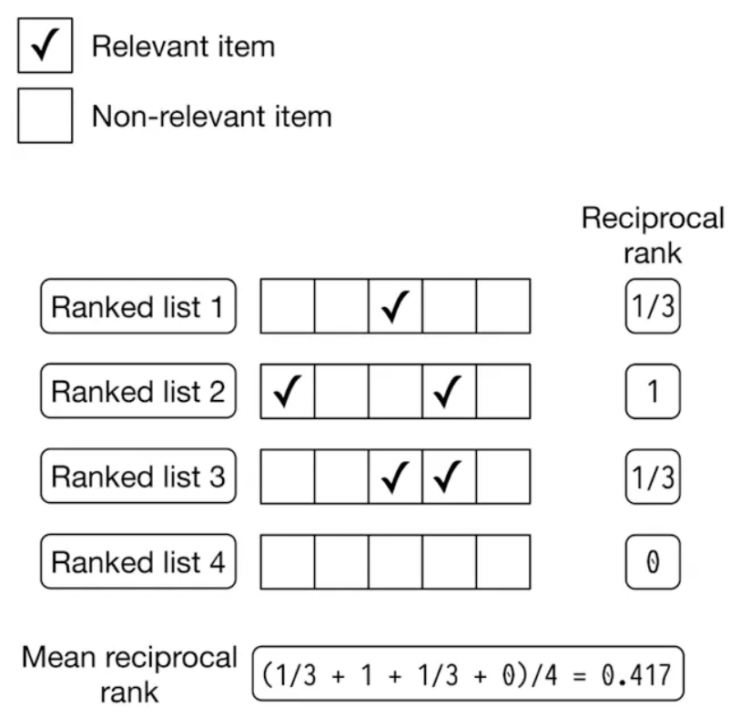
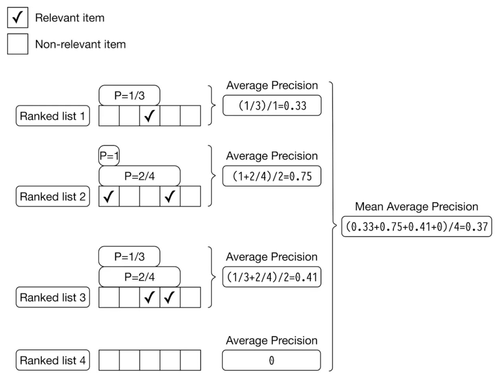
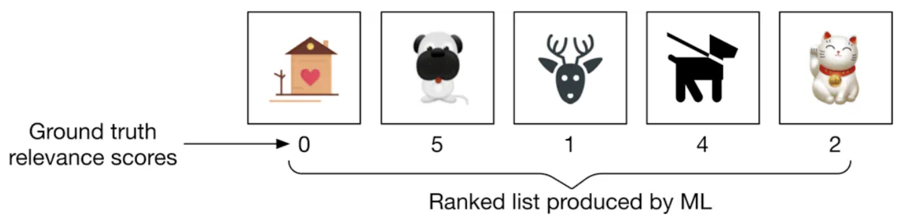
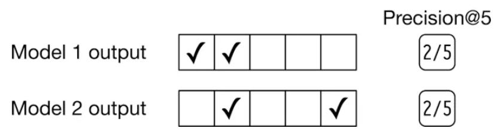
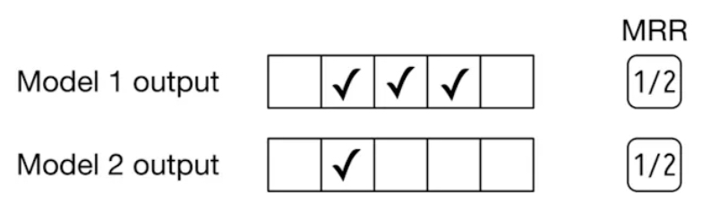

Recommendation Systems • Evaluation Metrics and Loss Functions
- Overview
- Offline testing
- Online testing
- Evaluating Candidate Generation
- Evaluating Candidate Ranking
- Fraction of Concordant Pairs (FCP)
- Mean Reciprocal Rank (MRR)
- Average Reciprocal Hit Rate (ARHR)
- Mean Average Precision at \(k\) (mAP@\(k\)) and Mean Average Recall at \(k\) (mAR@\(k\))
- Normalized Discounted Cumulative Gain (nDCG)
- Choosing between Precision and Recall @ \(k\), MRR, ARHR, mAP, or nDCG
- Regression-based Metrics
- Correlation Metrics
- Evaluating Re-ranking
- User Engagement/Business Metrics
- Calibration
- Loss Functions in Recommender Systems
- References
Overview
- In this primer, we will look at how different evaluation techniques, loss functions and metrics for recommender systems. When it comes to evaluating different types of recommender systems, the choice of metrics varies.
- For content-based filtering, similarity metrics are commonly used, while predictive and classification metrics are more relevant for collaborative filtering, depending on whether the system predicts scores or binary outcomes.
- Evaluation is essential to dissuade misalignment between the model and the user and choosing the correct metrics can help understand if your model is optimizing for the correct objective function.
- Good recommender systems are obtained by constant improvement and that comes with attention to metrics. Additionally, in practice, there may be a need to use more than one metric and in this case, calculating a weighted average of multiple metrics can be used to obtain a single overall score.
- Note that metrics in recommender systems are not just for user experience but also for creators (with metrics like Coverage) who build on the platform or for advertisers and all non-integrity violating items in the corpus should be fair game for recommendations.
Offline testing
- Offline testing or pre-deployment testing is an important step in evaluating recommender systems before deploying to production. The main purpose of offline testing is to estimate the model’s performance using historical data and benchmark it against other candidate models.
- Offline evaluations generally follow a train-test evaluation procedure which entails:
- Data Preparation: The first step is to prepare and select the appropriate historical data set and partition it into training and test sets.
- Model Training: Next, we train the model using the training set which can involve choosing the right algorithms, tuning hyperparameters and selecting eval metrics.
- Model Evaluation: Once the model is trained, it’s evaluated using the test set and the metrics used here depend on the business use case.
- Model Selection: Based on the evaluation, the best performing model is selected for deployment.
Online testing
- Online testing for recommender systems is the process of evaluating the system and it’s performance in a live environment. Once the pre-deployment/offline testing looks good, we test it on a small fraction of real user visits.
- The goal of online testing is to ensure that the system works as expected in a real-world environment with respect to the objective function and metrics. This can be achieved by A/B testing and we will delve into it in detail below.
A/B Testing
- A/B testing involves running two (A/B) or more (A/B/C/…/n) versions of a model simultaneously and assigning users to either the control or the treatment bucket by leveraging a hash function.
- The users in the treatment bucket will receive recommendations from the new model while the control bucket users will continue to receive recommendations from the existing model.
- The performance of each model is measured with metrics based on the business need, for example, CTR can be used if the objective is to maximize clicks.
- A/B testing can be used for any step in the recommendation system lifecycle, including candidate generation, scoring or ranking.
- It can be used to identify the best configuration of hyperparameters, such as regularization strength, learning rate, and batch size. In addition, A/B testing can be used to test different recommendation strategies, such as popularity-based, personalized, and diversity-based, and to identify the most effective strategy for different user segments and business contexts.
Evaluating Candidate Generation
- Candidate generation involves selecting a set of items from a large pool of items that are relevant to a particular user. The candidate generation phase plays a crucial role in recommender systems, especially for large-scale systems with many items and users, as it helps to reduce the search space and improve the efficiency of the recommendation process.
- It is essential to evaluate candidate generation as it affects the overall performance of the recommender system. Poor candidate generation can lead to a recommendation process that is either too narrow or too broad, resulting in a poor user experience. Additionally, it can lead to inefficient use of resources, as irrelevant items may be included in the recommendation process, requiring more computational power and time.
- To effectively evaluate the performance of candidate generation, it is important to consider key metrics such as precision and recall, which provide insights into the accuracy and completeness of the recommendations.
Precision
- Precision is the metric used to evaluate the accuracy of the system as it measures the number of relevant items that were recommended divided by the total number of recommended items. Put simply, precision measures the fraction of relevant items in the set of items that were recommended. Thus, precision focuses on the false positives.
Recall
- Recall is a metric that measures the percentage of relevant items that were recommended, out of all the relevant items available in the system.
- Put simply, recall measures the fraction of relevant items that were recommended out of the total number of relevant items present. Thus, precision focuses on the false negatives.
- A higher recall score indicates that the system is able to recommend a higher proportion of relevant items. In other words, it measures how complete the system is in recommending all relevant items to the user.
Precision and Recall @ \(k\)
- To ensure that the most relevant items appear at the top of the list, it is essential to penalize metrics when the most relevant items are positioned too far down in the ranking.
- Given that traditional precision and recall metrics do not account for the order of items, we focus on precision and recall at a specific cutoff \(k\). This involves examining your list of \(k\) recommendations incrementally: first considering only the top-ranked element, then the top two elements, then the top three, and so forth (these subsets are indexed by \(k\)).
- Precision and recall at \(k\) (also referred to as precision and recall “up to cutoff \(k\)”) are simply the precision and recall metrics calculated by considering only the subset of your recommendations from rank \(1\) through \(k\).
- This approach is particularly useful for evaluating ranking performance across devices with varying viewport sizes (i.e., when the display window size differs across devices), where the value of \(k\) may vary with each device configuration.
- Precision @ \(k\) is defined as the proportion of recommended items within the top-\(k\) set that are relevant.
- Its interpretation is as follows: Suppose the precision at 10 in a top-10 recommendation scenario is 80%. This implies that 80% of the recommendations provided are relevant to the user.
- Mathematically, Precision @ \(k\) is defined as:
- Recall @ \(k\) is defined as the proportion of relevant items found within the top-\(k\) recommendations.
- For example, if recall at 10 is computed to be 40% in a top-10 recommendation system, this indicates that 40% of the total relevant items are present in the top-\(k\) results.
- Mathematically, Recall @ \(k\) is defined as:
Limitations
- It is important to note that the primary limitation of Precision and Recall @ \(k\) is that they focus solely on whether the items in the top \(k\) positions are relevant, without considering the order of these items within those \(k\) positions. These metrics thus do not measure the ranking quality of the results.
When is Recall@\(k\) preferred to pure Recall?
- highlights some of the limitations of this metric in certain contexts. Although recall quantifies the proportion of relevant items the model fails to retrieve in its output, it is not always an appropriate metric. To illustrate this, consider systems such as search engines, where the total number of relevant items can be exceptionally large. This results in a disproportionately large denominator in the recall calculation, which negatively impacts the metric. For instance, if the query image is a picture of a dog, the database may contain millions of dog images. The objective in such cases is not to retrieve every relevant dog image but rather to return a select subset of the most similar dog images. Let’s break down the reasoning:
-
Definition of Recall: Recall measures the proportion of relevant items retrieved by the model out of the total number of relevant items available. It is defined as: \(\text{Recall} = \frac{\text{Number of relevant items retrieved}}{\text{Total number of relevant items in the database}}\)
-
Large Number of Relevant Items: In cases where the total number of relevant items is very large (e.g., millions of dog images in a database), the denominator of the recall formula becomes very large. This can lead to low recall scores even if the system retrieves a sufficient number of high-quality results that are relevant to the query. Essentially, the model may be penalized for not retrieving the full set of millions of relevant items, which is impractical and unnecessary in many cases, like search engines.
-
Search Engines and Precision: In systems like search engines, the goal is often to retrieve a small subset of the most relevant items rather than all possible relevant items. For example, when searching for dog images, returning a few of the most similar dog images to the query would be preferable to retrieving millions of similar images. In this context, recall can be misleading because it does not reflect the quality or precision of the results—it just emphasizes the proportion of total relevant items retrieved.
-
Recall@k: While Recall@\(k\) addresses this to some extent by considering only the top \(k\) results, it still suffers from the limitation that it does not account for how similar the top results are to each other or to the query. It is focused purely on whether relevant items appear in the top \(k\), without differentiating between varying degrees of relevance or the quality of ranking within those \(k\) items.
-
- Thus, while recall is useful in some contexts, it may not be the best metric for systems like search engines where the goal is to retrieve a few highly relevant results from a large pool of relevant items. Precision, ranking quality, or other metrics that account for the relevance of the top results might be more appropriate in such scenarios.
Log-likelihood
- Log-likelihood measures the goodness of fit of a model by calculating the logarithm of the likelihood function. It represents the logarithm of the probability that the model assigns to the observed data and is commonly applied to binary data, such as whether a user liked or disliked a particular item.
- Log-likelihood can be used to evaluate how well the candidate generation model fits the observed data. For example, in collaborative filtering methods or latent factor models, the log-likelihood of observing the user-item interactions (clicks, purchases, etc.) given the model’s parameters can be a measure of how well the model captures the underlying patterns in the data. Higher log-likelihood indicates a better fit to the observed data, suggesting that the candidate generation step is effectively capturing user preferences.
Evaluating Candidate Ranking
- Ranking refers to the process of ordering the items in the candidate set based on their predicted relevance to the user. The recommender system assigns a rank to each item, determining its position in the final list presented to the user.
- Once the items are ranked, their position in the list significantly influences the system’s performance metrics, such as precision and recall, which assess the accuracy and completeness of the recommendations.
- The ranking performance of a recommender system can be evaluated using metrics such as Normalized Discounted Cumulative Gain (nDCG), Mean Reciprocal Rank (MRR), etc.
Fraction of Concordant Pairs (FCP)
- Fraction of Concordant Pairs (FCP) is a ranking metric that evaluates how well the recommender system orders items in alignment with user preferences. FCP focuses on the pairwise correctness of rankings and provides a measure of ranking quality by comparing the relative positions of items.
Definition and Formula
- FCP is computed as the fraction of all item pairs \((i, j)\) for which the system’s ranking is consistent with the user’s preferences:
- Concordant Pair: A pair \((i, j)\) is concordant if:
- The user prefers item \(i\) over item \(j\) (e.g., based on clicks, ratings, or other implicit/explicit feedback), and
- The system ranks \(i\) higher than \(j\).
- Discordant Pair: A pair \((i, j)\) is discordant if:
- The user prefers item \(i\) over item \(j\), but the system ranks \(j\) higher than \(i\).
Key Characteristics
- Pairwise Evaluation: FCP evaluates the ranking quality at the level of item pairs, making it particularly suited for systems where relative preferences between items are important.
- Scale: FCP values range from 0 to 1, with 1 indicating perfect concordance (all pairs are correctly ranked), and 0 indicating no concordance.
- Interpretability: The metric is easy to interpret, as it directly quantifies the proportion of pairs ranked correctly.
Advantages
- Granularity: By focusing on pairwise comparisons, FCP captures nuanced details of ranking quality that aggregate metrics may overlook.
- Preference Alignment: It provides a direct measure of how well the system’s rankings reflect user preferences.
Limitations
- Computational Cost: Calculating FCP for large datasets can be computationally expensive due to the quadratic growth in the number of item pairs as the dataset size increases.
- Data Dependency: FCP relies on having well-defined user preferences for pairs of items, which may not always be readily available.
Use Cases
- FCP is especially relevant in domains where relative ordering is critical, such as:
- E-commerce: Ranking products based on user preferences.
- Entertainment: Ordering movies or songs by expected user enjoyment.
- Search and Retrieval: Optimizing the relevance of search results.
Example
- Suppose a user has interacted with three items \(A\), \(B\), and \(C\), with their true preferences being \(A > B > C\). The system ranks them as \(B, A, C\):
- Concordant Pairs:
- \(A > C\) (System ranks \(A\) above \(C\), which matches user preference).
- Discordant Pairs:
- \(A > B\) (System ranks \(B\) above \(A\)).
- \(B > C\) (System ranks \(C\) above \(B\)).
- FCP Calculation:
- Concordant Pairs: 1, Discordant Pairs: 2.
- \(FCP = \frac{1}{1 + 2} = 0.33\).
- Concordant Pairs:
- FCP complements metrics like Mean Reciprocal Rank (MRR) and Normalized Discounted Cumulative Gain (nDCG) by focusing specifically on the correctness of pairwise ordering in the rankings, providing an additional layer of evaluation for recommender systems.
Mean Reciprocal Rank (MRR)
- Mean Reciprocal Rank (MRR) is a crucial metric for evaluating the performance of recommender systems, particularly in scenarios where explicit relevance labels are unavailable. In such instances, the system relies on implicit signals, such as user clicks or interactions, to assess the relevance of recommended items. MRR considers the position of the recommended items when determining their relevance. In essence, MRR quantifies how effectively the algorithm ranks the correct item within a list of recommendations
- Formally, the Reciprocal Rank (RR) is defined as the inverse of the rank of the first relevant item. Accordingly, MRR is calculated as the average RR across all users/queries. MRR thus evaluates the quality of a model by considering the position (or rank) of the first relevant item in each output list generated by the model (across multiple users or multiple queries per user), and subsequently averaging these positions.
- The formula for MRR is as follows:
- where:
- \(m\) represents the total number of output lists (users or queries),
- \(rank_i\) denotes the position of the first relevant item in the \(i^{th}\) output list.
- To illustrate MRR, consider the example of Facebook friend suggestions. Users are more inclined to click on a recommendation if it appears at the top of the list. Similar to nDCG, the position within the list serves as an indicator of relevance. MRR addresses the question: “How highly ranked is the first relevant recommendation in a list of suggestions?”
Limitations
- Since MRR considers only the first relevant item and ignores other relevant items in the output list, it does not measure the ranking quality beyond the first relevant element.
Example
- The figure below (source) shows four ranked lists, where each list contains results (both relevant and non-relevant), and the first relevant item in each list determines the reciprocal rank. This example shows how MRR quantifies the effectiveness of ranking algorithms by averaging how far down the relevant results are in different ranked lists.

- Ranked List 1:
- Non-relevant results appear in the first two positions.
- The relevant result appears in the 3rd position (marked with ✓).
- Reciprocal Rank: 1/3 (since the first relevant result appears in the 3rd position).
- Ranked List 2:
- The first relevant result appears in the 1st position.
- Another relevant result appears later, but it is irrelevant for MRR calculation.
- Reciprocal Rank: 1 (since the first relevant result is in the 1st position).
- Ranked List 3:
- Non-relevant results appear in the first two positions.
- The relevant result appears in the 3rd position (marked with ✓).
- Reciprocal Rank: 1/3 (since the first relevant result appears in the 3rd position).
- Ranked List 4:
- All results are non-relevant.
- Reciprocal Rank: 0 (since there is no relevant result in the list).
-
MRR is calculated by taking the average of the reciprocal ranks of all the lists:
- MRR = (1/3 + 1 + 1/3 + 0) / 4
- MRR ≈ 0.417
-
This means that, on average, the first relevant result appears early in the ranked lists, with a mean reciprocal rank of approximately 0.417.
Average Reciprocal Hit Rate (ARHR)
- The Average Reciprocal Hit Rate (ARHR) is a generalization of MRR for scenarios involving multiple clicked items, and it is often used interchangeably with MRR in the literature.
- The Reciprocal Hit Rate (RHR) is computed for each user by summing the reciprocals of the positions of the clicked items within the recommendation list. For instance, if the third item in the list is clicked, its reciprocal would be \(\frac{1}{3}\). The RHR for a user is the sum of these reciprocals for all clicked items.
- ARHR is obtained by averaging the RHR values across all users, providing an overall measure of the system’s performance. It reflects the average effectiveness of the recommender system in presenting relevant items at higher positions within the recommendation list.
- By incorporating the position of clicked items and averaging across users, ARHR offers insights into the proportion of relevant items within the recommended list, assigning greater weight to those appearing at higher positions.
- Similar to MRR, a higher ARHR indicates that the recommender system is more effective in prominently presenting relevant items, leading to enhanced user engagement and satisfaction.
-
Additionally, ARHR is based on the top \(k\) positions in the ranked list. The metric emphasizes the importance of relevant items appearing within these top \(k\) results, reflecting the system’s ability to present the most relevant results quickly. The formula for ARHR is:
\[ARHR = \frac{1}{|U|} \sum_{u \in U} \sum_{i=1}^{k} \frac{1}{rank_i(u)}\]- where:
- \(U\) is the set of users or queries,
- \(rank_i(u)\) is the rank of the \(i\)-th relevant item for user \(u\),
- \(k\) is the cutoff rank, limiting the evaluation to the top \(k\) results.
- where:
- This approach places more weight on relevant items appearing earlier in the list, thus favoring systems that surface relevant content quickly within the top \(k\) recommendations.
Mean Average Precision at \(k\) (mAP@\(k\)) and Mean Average Recall at \(k\) (mAR@\(k\))
Average Precision at \(k\) (AP@\(k\)) and Average Recall at \(k\) (AR@\(k\))
- Let’s first understand Average Precision at \(k\) (AP@\(k\)) and Average Recall at \(k\) (AR@\(k\)), before we explore Mean Average Precision at \(k\) (mAP@\(k\)) and Mean Average Recall at \(k\) (mAR@\(k\)).
- The Average Precision at \(k\) (AP@\(k\)) is calculated as the sum of precision at each rank \(k\) where the item at the \(k^{th}\) rank is relevant (denoted as
rel(k)), divided by the total number of relevant items (\(r\)) within the top \(k\) recommendations.
- This equation can be further expanded as follows:
- Here, the relevance function \(\text{rel}(k)\) is defined as:
-
For specific cases, such as different device types, the value of \(k\) is adjusted accordingly. Only the precision terms corresponding to relevant items within the given window size are included in the sum, and these precision values are averaged and normalized by the number of relevant items.
-
Similarly, the Average Recall at \(k\) (AR@\(k\)) is used to calculate the average recall for a specified window:
- This equation can also be expanded as:
- Again, the relevance function \(\text{rel}(k)\) is defined as:
- The article titled “Mean Average Precision at K (MAP@K) clearly explained” provides an excellent summary of the calculation process for both AP@\(k\) and AR@\(k\).
mAP@\(k\) and mAR@\(k\)
- In the context of Mean Average Precision (mAP), as discussed in the section above on Average Precision at \(k\) (AP@\(k\)) and Average Recall at \(k\) (AR@\(k\)), the term “average” refers to the calculation of average precision across various cutoff points \(k\) (e.g., for different window sizes as previously mentioned), while the term “mean” indicates the average precision calculated across all users who received recommendations from the system.
- Average across different cutoff points ranging from \(0\) to \(k\) (AP@\(k\)): mAP considers multiple cutoff points within the recommendation list, calculating the average precision at each window size, and then determining the overall average across these cutoff points. This approach offers a comprehensive evaluation of the recommender system’s performance at various positions within the recommendation list.
- Mean across all users/ranked lists (mAP@\(k\)): For each user who received recommendations, precision at each window size is computed, and these precision values are then averaged (across the ranked lists corresponding to each user) to obtain the mean precision for that user. The mean precision is calculated for all users who were presented with recommendations by the system. Finally, the mean of these user-specific mean precision values is computed, resulting in the Mean Average Precision.
- By considering both the average precision across cutoff points and the mean precision across users, mAP provides an aggregated measure of the recommender system’s performance, capturing its ability to recommend relevant items at various positions within the list and offering a comprehensive evaluation across the entire user population.
- mAP is widely used in information retrieval and recommender system evaluation, particularly in contexts where the ranking position of recommended items is critical, such as search engine result ranking or personalized recommendation lists.
- Similarly, the Mean Average Recall (mAR) metric follows the same conceptual structure:
- Average across different cutoff points ranging from \(0\) to \(k\) (AR@\(k\)): mAR evaluates the system’s ability to capture relevant items at various cutoff points within the recommendation list, calculating the recall at each window size and determining the overall average across these cutoff points. This approach enables a thorough evaluation of the system’s performance at different positions within the list.
- Mean across all users (mAR@\(k\)): For each user who received recommendations, recall at each window size is calculated, and these recall values are then averaged to obtain the mean recall for that user. The mean recall is determined for all users, and the final Mean Average Recall is derived by averaging these values across the entire user base.
- By integrating both the average recall across cutoff points and the mean recall across users, mAR provides a holistic measure of the system’s performance, capturing its ability to recommend a diverse range of relevant items at various positions within the list and offering a comprehensive evaluation across all users.
- mAR is frequently utilized in information retrieval and recommender system evaluation, especially in scenarios where it is important to ensure the recommendation of relevant items throughout the list. It complements metrics like mAP and provides valuable insights into the overall recall performance of the system.
Limitations
- It is important to note that mAP and mAR are specifically designed for binary relevance judgments—where each item is either relevant or irrelevant. For cases involving continuous relevance scores, Normalized Discounted Cumulative Gain (nDCG) is a more suitable alternative.
Example
- The figure below (source) presents an example of AP calculations for each of the four output lists generated by the model and further averages the AP scores to yield mAP, reflecting the overall ranking quality of the list.

Normalized Discounted Cumulative Gain (nDCG)
- Normalized Discounted Cumulative Gain (nDCG) is a list-wise ranking metric commonly employed to assess the quality of a recommender system’s ranked list of recommendations.
- nDCG requires a list that includes the ranking information for each relevant item, such as those derived from a search query.
- To understand nDCG, it is essential first to understand Discounted Cumulative Gain (DCG) and Cumulative Gain (CG).
- Discounted Cumulative Gain (DCG): DCG is a ranking evaluation metric that assesses the effectiveness of a recommendation system in producing a ranked list of recommended items for a user. In essence, DCG measures the quality of the ranking of a set of items, considering both the relevance of the recommended items and their positions within the list. The underlying concept is that items ranked higher should be more relevant, thereby contributing more significantly to the overall quality of the ranking.
- Cumulative Gain (CG): CG is a simpler metric that sums the relevance scores of the top \(k\) items in the ranking.
nDCG: An In-Depth Analysis
- It is often necessary to discern which items are more relevant than others, even if all items are deemed relevant.
- The rationale is to prioritize the most relevant items at the top of the list. Companies may occasionally employ human labelers to rate the relevance of results, such as those returned from a search query.
- nDCG is widely utilized in information retrieval and recommender systems. Unlike binary metrics that simply categorize items as either relevant or not relevant, nDCG considers relevance on a continuous scale.
- A deeper understanding of nDCG can be achieved by breaking it down into its fundamental components.
Cumulative Gain (CG)
\[\text{CG} =\sum_{i=1}^N \text{relevance score}_i\]- Relevance labels are crucial for evaluating the quality of recommendations in recommender systems. These labels enable the computation of various metrics to assess the effectiveness of the recommendation process. One such metric is Cumulative Gain (CG), which quantifies the total relevance within the recommended list.
- The primary question that the CG metric addresses is: “How much relevance is present in the recommended list?”
- To obtain a quantitative answer, the relevance scores assigned to the recommended items by the labeler are summed. These relevance scores can be based on user feedback, ratings, or other forms of relevance measurement. It is important to establish a cutoff window size, denoted by \(N\), to ensure that only a finite number of elements in the recommended list are considered.
- By setting the window size \(N\), the calculation is restricted to a specific number of items in the recommendation list. This prevents the inclusion of an infinite number of elements, making the evaluation process both feasible and practical.
- The cumulative gain metric measures the overall relevance accumulated in the recommended list. A higher cumulative gain indicates a greater amount of relevance captured by the recommendations, whereas a lower cumulative gain suggests a lack of relevant items in the list.
Discounted Cumulative Gain (DCG)
- While CG provides a measure of the total relevance of a recommended list, it does not account for the critical aspect of the position or ranking of search results. CG treats all items equally, regardless of their order, which is problematic since the goal is to prioritize the most relevant items at the top of the list. Discounted Cumulative Gain (DCG) addresses this issue.
- DCG improves upon CG by incorporating the position of search results into the calculation. It does so by applying a discount to the relevance scores based on their position within the recommendation list.
The principle is to position-discount the retrieved items and assign higher weights to relevant items that appear at the top of the list, reflecting the intuition that users are more likely to interact with items presented earlier.
- The formula for DCG at position \(p\) is:
- where:
- \(p\): The position in the ranked list where you want to calculate DCG (often the cutoff point for evaluation, e.g., the top 10 results).
- \(\text{relevance}_i\): The relevance score of the item at position \(i\). This score is typically assigned based on the item’s relevance to the user (e.g., binary relevance like 0 or 1, or graded relevance such as 0, 1, 2, etc.).
- \(i\): The position of the item in the ranked list (starting from 1).
- \(\log_2(i + 1)\): The discounting factor that reduces the impact of relevance scores as the item’s position \(i\) increases. The logarithmic scale reflects the observation that users are far more likely to interact with higher-ranked items, but the importance diminishes slowly as you move down the list.
- As a breakdown of the above formula, the numerator \(\text{relevance}_i\) ensures that the most relevant items contribute more to the DCG, while the denominator \(\log_2(i + 1)\) discounts the relevance of items based on their position in the list. This means that items at higher positions (closer to the top of the list) are weighted more heavily than those that appear further down.
- Note that DCG is computed based on the ranking produced by a model (i.e., the predicted ranking). The relevance scores are the actual relevance of the items in the order they were predicted by the model. So, for the predicted ranking, you take the relevance of the items in the order they appear, discounting them based on their position in the ranking.
- Typically, the discounting factor used in DCG follows a logarithmic function. This implies that as the position of an item decreases, the relevance score is discounted at a decreasing rate. Consequently, the relevance score of an item at a higher position carries more weight than that of an item at a lower position, reflecting the diminishing importance of items as one moves down the list.
Normalized Discounted Cumulative Gain (nDCG)
- The calculation of DCG can be influenced by the specific values assigned to relevance labels. Even with well-defined guidelines, different labelers may interpret and assign relevance scores differently, resulting in variations in DCG values. Since DCG aggregates the relevance scores of items, adjusted for their positions through discounting, it can theoretically span any range. To address this issue and enable meaningful relative comparisons, normalization is applied to standardize DCG scores by the highest achievable value. This normalization is achieved through the concept of Ideal Discounted Cumulative Gain (IDCG).
- IDCG represents the DCG score that would be obtained with an ideal ordering of the recommended items. It serves as a benchmark against which actual DCG values can be compared and normalized. By defining the DCG of the ideal ordering as IDCG, a reference point for the highest achievable relevance accumulation in the recommended list is established.
- The Normalized Discounted Cumulative Gain (nDCG) is derived by dividing the DCG score by the IDCG value:
- Note that IDCG represents the best possible ranking, where the items with the highest relevance scores appear at the top. It thus uses the ideal or ground-truth relevance scores, sorted in decreasing order. This is in stark contrast compared to DCG, where relevance scores are based on the predicted ranking.
- This division ensures that nDCG values are standardized and comparable across different recommendation scenarios. nDCG provides a normalized measure of the quality of recommendations, where a value of 1 represents the ideal ordering and indicates the highest level of relevance.
- nDCG, therefore, is a normalized version of DCG that accounts for the ideal ranking, which is the ranking that maximizes the DCG. The goal is to compare the actual ranking to the ideal ranking to determine the degree of deviation.
- It is important to note that when relevance scores are all positive, nDCG falls within the range of [0, 1]. Note that in a perfect ranking system, DCG is equal to IDCG (and thus nDCG = 1). Put simply, a value of 1 indicates that the recommendation list follows the ideal ordering, maximizing relevance accumulation. Conversely, lower nDCG values suggest a less optimal ordering of recommendations, with a decreasing level of relevance.
- By employing nDCG, recommender systems can consistently evaluate their performance across diverse datasets and labeler variations. nDCG facilitates the comparison of different recommendation algorithms, parameter settings, or system enhancements by providing a normalized metric that accounts for variations in relevance scores, thereby promoting fair evaluation practices.
Limitations
- nDCG may not be the best fit in scenarios where relevance is strictly binary (either relevant or not). In such cases, its capability to handle graded/continuous relevance is unnecessary, and simpler metrics like mAP may be more appropriate. Another limitation is that deriving accurate ground truth relevance scores might not be always feasible. However, while modeling a business problem as an ML task, if the evaluation dataset contains similarity scores (say, based on embedding similarity), we can effectively use nDCG to measure the model’s performance during offline evaluation.
Example
- To better understand nDCG, consider the example in the following figure (source) which shows a ranked list of output images and their corresponding ground truth relevance scores is produced by a search system.

nDCG Calculation Process
- We can compute nDCG in three steps:
- Compute DCG
- Compute IDCG
- Divide DCG by IDCG to yield nDCG
Compute DCG
- The DCG for a given ranking produced by the model is calculated as:
- Using the relevance scores from the ranked list per the figure above:
- Note that the subscript \(p\) in \(\text{DCG}_p\) refers to the position in the ranked list up to which the DCG is calculated. In other words, \(p\) represents the number of items considered in the ranking. For example, if \(p = 5\), this means that the DCG is being calculated based on the first 5 items in the ranking list.
- In practice, DCG can be calculated at various cut-off points in the ranked list, such as \(p = 5\) or \(p = 10\), depending on the evaluation needs. This allows you to measure how well the system performs within a specific number of top results, which is useful when users are only expected to view a limited number of results (e.g., top 5 or top 10 items).
- Thus, \(\text{DCG}_p\) means the DCG computed for the top \(p\) ranked results. Similarly, \(\text{IDCG}_p\) and \(\text{nDCG}_p\) also refer to their respective calculations at the cut-off point \(p\).
Compute IDCG
- IDCG assumes the best possible ranking where the most relevant items are placed at the top. Using the ideal ranked list in the figure below (source), we calculate IDCG as:

- Substituting the relevance scores from the ideal ranking:
Compute nDCG
- Finally, we normalize the DCG by dividing it by the IDCG:
Choosing between Precision and Recall @ \(k\), MRR, ARHR, mAP, or nDCG
-
When choosing between Precision and Recall @ \(k\), MRR, ARHR, nDCG, or mAP as ranking metrics, several key considerations must be evaluated based on the nature of the data and the specific objectives of the recommendation system:
- Precision and Recall @ \(k\):
- Focus: Precision @ \(k\) measures the proportion of relevant items among the top \(k\) results, while Recall @ \(k\) measures the proportion of relevant items retrieved among the top \(k\) results relative to the total number of relevant items. These metrics are particularly useful when you are interested in the performance of the system within a specific cutoff point \(k\).
- Suitability: These metrics are straightforward and useful in scenarios where the user typically reviews only a limited number of recommendations (e.g., the first page of results). They are particularly applicable in systems where relevance is binary, and the objective is to evaluate how well the top recommendations capture relevant items.
- Limitation: Precision and Recall @ \(k\) do not account for the relative ordering of items within the top \(k\) results. They simply consider whether the relevant items are present, but do not reward the system for ranking more relevant items higher within that subset. Put simply, the precision and recall @ \(k\) metrics measures how precise the output lists are, but they are not an indicator of ranking quality. For example, if we rank more relevant items higher in the list, precision @ \(k\) doesn’t change. As demonstrated in the example in the figure below (source), increasing the ranking of relevant items higher in the list does not affect precision @ \(k\) since it does not account for the ranking quality of the results within the retrieved elements (\(k\), in this case).

- Fraction of Concordant Pairs (FCP):
- Focus: FCP measures the pairwise ranking accuracy of a recommendation system by evaluating how well the system’s ranking aligns with the user’s preferences for item pairs. It captures the fraction of item pairs where the relative ordering of items in the system’s ranking matches the user’s preferences.
- Suitability: FCP is ideal for systems where the correctness of relative rankings between item pairs is critical, such as in personalized recommendation systems, e-commerce platforms, or content ranking applications. It provides a fine-grained evaluation of the system’s ranking quality by considering pairwise relationships.
- Limitation: FCP can be computationally expensive for large datasets because the number of item pairs grows quadratically with the size of the dataset. Additionally, it requires explicit or implicit user preference data, which may not always be available.
- Mean Reciprocal Rank (MRR):
- Focus: MRR is based on the rank of the first relevant item in the list, making it particularly useful when the system is expected to retrieve a single relevant item or when the user’s primary interest is finding the first relevant result quickly. MRR is especially valuable in situations where explicit relevance labels are absent, and the system must rely on implicit signals, like user clicks or interactions, to gauge the relevance of recommended items. In such cases, MRR helps prioritize systems that can surface the most relevant results quickly, based on these indirect indicators of user satisfaction.
- Suitability: MRR is well-suited for systems like search engines or question-answering platforms where the goal is to return the first relevant item as quickly as possible. MRR measures how quickly the relevant result appears in the ranked list, and human clicks can serve as a proxy for relevance judgments if those clicks are reliable indicators of relevance.
- Limitation: In an event recommendation system where multiple relevant events may be of interest to the user, MRR is not an ideal choice. Since it focuses only on the first relevant item, it fails to account for other relevant events that might also be important to the user. Furthermore, MRR is less effective in contexts where relevance is graded/continuous or non-binary, as it is based on binary feedback (i.e., it requires a binary relevance score for each item) and thus does not account for varying degrees of relevance.
- Since MRR only takes into account the first relevant item and disregards any subsequent relevant items within the ranked list, it fails to assess the overall precision and ranking quality of the list. For instance, as illustrated in the figure below (source), the outputs of two different models are compared. Model 1 produces three relevant items, while model 2 yields only one relevant item. Nevertheless, the reciprocal rank for both models is 0.5.

- Average Reciprocal Hit Rate (ARHR):
- Focus: ARHR is an extension of MRR that accounts for all relevant items within the top \(k\) positions. Unlike MRR, which only considers the first relevant item, ARHR calculates the reciprocal of the rank for each relevant item found within the top \(k\) positions and averages them. This makes it more comprehensive in capturing the performance of systems where multiple relevant items are important.
- Suitability: ARHR is suitable for recommendation systems where it is important not only to retrieve the first relevant item quickly but also to ensure that all relevant items are ranked as high as possible within the top \(k\) positions. It is particularly useful in systems where the user might be interested in multiple items from the recommendation list.
- Limitation: Like MRR, ARHR is sensitive to the position of relevant items, but it still may not fully capture the quality of the overall ranking beyond the top \(k\) positions. If the goal is to measure ranking quality, mAP would be better in this case. Additionally, in cases where relevance is graded/continuous rather than binary, other metrics like nDCG should be preferred to assess the quality of the ranking.
- Mean Average Precision (mAP):
- Focus: mAP is a metric that calculates the average precision across multiple queries, taking into account the ranking of all relevant items. It is designed for binary relevance, where each item is either relevant or not.
- Suitability: mAP is particularly well-suited for systems where relevance is binary, such as event recommendation systems, where an event is either relevant (e.g., a user registered) or irrelevant (e.g., a user did not register). mAP evaluates how well all relevant items are ranked, rewarding systems that consistently rank relevant items higher.
- Limitation: Unlike Precision or Recall at \(k\), mAP does measure ranking quality (since the AP score is high if more relevant items are located at the top of the list), however, mAP is less effective in contexts where relevance is graded/continuous or non-binary, as it is based on binary feedback (i.e., binary relevance score) and thus does not account for varying degrees of relevance.
- Normalized Discounted Cumulative Gain (nDCG):
- Focus: nDCG is designed to measure the quality of the ranking by considering the position of relevant items in the list, with higher rewards given to relevant items that appear earlier. It is particularly effective in situations where the relevance of items is graded/continuous, meaning that some items are more relevant than others.
- Suitability: nDCG is a strong choice when the relevance score between a user and an item is non-binary (e.g., some events are highly relevant while others are only somewhat relevant). It provides a nuanced evaluation by accounting for the relative relevance of items and their positions in the ranking.
- Limitation: nDCG may not be the best fit in scenarios where relevance is strictly binary (either relevant or not). In such cases, its capability to handle graded/continuous relevance is unnecessary, and simpler metrics like mAP may be more appropriate. Another limitation is that deriving accurate ground truth relevance scores might not be always feasible. However, while modeling a business problem as an ML task, if the evaluation dataset contains similarity scores (say, based on embedding similarity), we can effectively use nDCG to measure the model’s performance during offline evaluation.
Summary
- Precision and Recall @ \(k\) are ideal when the focus is on the performance of the system within a specific cutoff, particularly in binary relevance scenarios, but they do not consider the relative ranking within the top \(k\) items.
- FCP is an effective metric for evaluating the pairwise ranking accuracy of a system, making it particularly valuable in domains where the relative order of items matters. However, its computational cost and reliance on user preference data may limit its applicability for large-scale or sparse datasets.
- MRR is suitable for systems where only one relevant item is expected to be retrieved, but it is not appropriate for recommendation systems where multiple relevant items are expected.
- ARHR is a more comprehensive alternative to MRR when multiple relevant items are of interest. It accounts for the rank of all relevant items within the top \(k\), making it a strong choice for recommendation systems where the user might be interested in several items from the list.
- mAP is the best choice when relevance is binary and the goal is to maximize the ranking of all relevant items, making it well-suited for recommendation systems where relevance is clear-cut.
- nDCG is the preferred metric when relevance is graded/continuous and the order of items is important, but it may be unnecessary in binary relevance scenarios. Additionally, nDCG is ideal for capturing the quality of the overall ranking beyond the top \(k\) positions, providing a nuanced evaluation across the entire list.
Regression-based Metrics
- Regression-based accuracy metrics are used to evaluate how effectively the model predicts user preferences. They quantify the difference between predicted and actual ratings for a given set of recommendations, providing insight into the model’s predictive accuracy.
Root Mean Squared Error (RMSE)
- RMSE measures the square root of the average of the squared differences between predicted and actual ratings. It is particularly useful for continuous ratings, such as those on a scale from 1 to 5.
Mean Absolute Error (MAE)
- MAE measures the average magnitude of errors in a set of predictions, without considering their direction. It is calculated by averaging the absolute differences between predicted and actual values and is also widely used for continuous ratings.
Correlation Metrics
- Correlation metrics are employed to evaluate the performance and effectiveness of recommendation algorithms. These metrics assess the relationship between the predicted rankings or ratings provided by the recommender system and the actual user preferences or feedback, helping to gauge the accuracy and consistency of the generated recommendations.
Kendall Rank Correlation Coefficient
\[\tau = \frac{\text{Number of pairs ordered correctly} - \text{Number of pairs ordered incorrectly}}{\text{Total number of pairs}}\]- Kendall rank correlation is well-suited for recommender systems dealing with ranked or ordinal data, such as user ratings or preferences. It quantifies the similarity between predicted and true rankings of items. A higher Kendall rank correlation indicates the system’s success in capturing the relative order of user preferences.
Pearson Correlation Coefficient
- Although Pearson correlation is primarily used for continuous variables, it can also be applied in recommender systems to evaluate the linear relationship between predicted and actual ratings. However, it is important to note that Pearson correlation may not capture non-linear relationships, which are common in recommender systems.
Spearman Correlation Coefficient
- Similar to Kendall rank correlation, Spearman correlation is useful for evaluating recommender systems with ranked or ordinal data. It assesses the monotonic relationship between predicted and true rankings, with a higher Spearman correlation indicating a stronger monotonic relationship between the recommended and actual rankings.
Evaluating Re-ranking
- Diversity, novelty/freshness, and serendipity are valuable metrics for evaluating re-ranking in recommender systems. These metrics go beyond traditional accuracy-focused measures (like precision, recall for candidate retrieval or nDCG for ranking) to provide a more holistic evaluation of how well a recommender system meets user needs and enhances user experience. Here’s how each of these metrics can be applied in the context of re-ranking:
Diversity
-
Definition: Diversity measures the degree to which recommended items cover different aspects of the user’s preferences, ensuring that the recommendations are varied rather than repetitive. This can be evaluated by examining the dissimilarity among recommended items.
-
How to Measure: One common way to calculate diversity is by computing the average pairwise dissimilarity between the recommended items. This can be done using various similarity measures, such as cosine similarity. For example, if you have three categories of items that the user likes and the user has interacted with only one item in this session, the session is not diverse.
-
Cosine Similarity Formula: To quantify diversity, we can use a cosine similarity measure between item pairs. This can be defined as:
\[\text{CosineSimilarity}(i, j) = \frac{\text{count(users who bought } i \text{ and } j \text{)}}{\sqrt{\text{count(users who bought } i \text{)}} \times \sqrt{\text{count(users who bought } j \text{)}}}\]By calculating this similarity across all item pairs and then taking its complement, we can derive the diversity of the recommendations. A lower cosine similarity indicates higher diversity.
Novelty/Freshness
-
Definition: Novelty measures the degree to which recommended items are dissimilar to those the user has already seen or interacted with. It aims to introduce new, unfamiliar items to the user, enhancing the exploration of content.
-
How to Measure: Novelty can be measured by considering how frequently an item has been recommended to or interacted with by users. The idea is to recommend items that are less common and thus more novel to the user.
-
Novelty Formula: The novelty of a recommended item can be calculated using the following formula:
\[\operatorname{Novelty}(i) = 1 - \frac{\text{count(users recommended } i)}{\text{count(users who have not interacted with } i \text{)}}\]Here, a higher novelty score indicates that an item is less frequently recommended or interacted with, making it more novel to the user.
Serendipity
-
Definition: Serendipity is the ability of the recommender system to suggest items that a user might not have thought of but would find interesting or useful. It captures the element of surprise by recommending items that are unexpected yet relevant.
-
Importance: Serendipity is a crucial aspect of recommendation quality because it helps users discover new and intriguing items they might not have encountered otherwise, thereby increasing user engagement and satisfaction.
-
How to Measure: Serendipity can be measured by looking at how unexpected and relevant the recommended items are, considering both the user’s historical preferences and the surprise factor.
-
Serendipity Formula: A generic way to calculate serendipity across all users can be expressed as:
\[\text{Serendipity} = \frac{1}{\operatorname{count}(U)} \sum_{u \in U} \sum_{i \in I} \frac{\text{Serendipity}(i)}{\operatorname{count}(I)}\]This formula averages the serendipity scores of all recommended items across all users. Each item’s serendipity score could be determined based on its relevance and unexpectedness to the individual user.
Integration into Re-Ranking
- Re-ranking algorithms in recommender systems can integrate these metrics to optimize the final list of recommendations. By balancing relevance with diversity, novelty, and serendipity, systems can provide a richer and more engaging experience. For example, a multi-objective optimization approach can weigh these different aspects based on user profiles and preferences to generate a list that is not only relevant but also varied, fresh, and surprisingly delightful.
User Engagement/Business Metrics
- User engagement metrics are used to measure the performance of the entire recommender system (across all its stages) by measuring how much users engage with the recommended items. Below we will look at a few common engagement metrics.
Click-through rate (CTR)
- CTR is a commonly used metric to evaluate ranking in recommenders. CTR is the ratio of clicks to impressions (i.e., number of times a particular item is shown). It provides an indication of how effective the recommendations are in terms of driving user engagement.
- However, a downside with CTR is that it does not take into account the relevance or quality of the recommended items, and it can be biased towards popular or frequently recommended items.
Average number of clicks per user
- As the name suggests, this calculates the average number of clicks per user and it builds on top of CTR. It allows more relevance as the denominator is changed with the total number of users instead of total number of clicks.
Conversion Rate (CVR)
- CVR measures the ratio of conversions to clicks. It is calculated by dividing the number of conversions by the number of clicks.
Session Length
- This measures the length of a user session. It is calculated by subtracting the start time from the end time of a session.
Dwell Time
- Dwell time is the measures the amount of time a user spends on a particular item. It is calculated by subtracting the time when the user stops engaging with an item from the time when the user starts engaging with it.
Bounce Rate
- Here, we measure the percentage of users who leave a page after viewing only one item. It is calculated by dividing the number of single-page sessions by the total number of sessions.
Hit Rate
- Hit rate is analogous to click through rate but is more generic. It is concerned with the fact that out of the recommended lists, how many users watched a movie in that visible window. The window size here is custom to each product, for example for Netflix, it would be the screen size.
Calibration
- Calibration of scores is also essential in recommender systems to ensure that the predicted scores or ratings are reliable and an accurate representation of the user’s preferences. With calibration, we adjust the predicted scores to match the actual scores as there may be a gap due to many factors: data, changing business rules, etc.
- A few techniques that can be used for this are:
- Post-processing methods: These techniques adjust the predicted scores by scaling or shifting them to match the actual scores. One example of a post-processing method is Platt scaling, which uses logistic regression to transform the predicted scores into calibrated probabilities.
- Implicit feedback methods: These techniques use implicit feedback signals, such as user clicks or time spent on an item, to adjust the predicted scores. Implicit feedback methods are particularly useful when explicit ratings are sparse or unavailable.
- Regularization methods: These techniques add regularization terms to the model objective function to encourage calibration. For example, the BayesUR algorithm adds a Gaussian prior to the user/item biases to ensure that they are centered around zero.
Loss Functions in Recommender Systems
- Loss functions are essential in training recommender models as they guide the optimization of model parameters. These functions are minimized during training to improve the model’s performance on a given task. While loss functions help in tuning the model’s internal parameters, evaluation metrics are used to measure the model’s performance on held-out validation or test sets.
- When training a recommender system, loss functions can be utilized to minimize bias, enforce fairness, enhance diversity, and ensure that the recommendations align with specific goals or constraints. The choice of loss function can significantly influence the behavior and effectiveness of a recommender system. Below are some examples of loss functions commonly used in recommender systems:
Cross-Entropy Loss
- Definition: Cross-entropy loss is widely used in classification tasks and can be adapted to recommender systems. It measures the difference between the predicted probability distribution over items and the actual distribution (usually represented as a one-hot encoded vector).
-
Equation:
\[\text{Cross-Entropy Loss} = -\sum_{i=1}^{N} y_i \log(p_i)\]- where \(y_i\) is the true label (1 if item \(i\) is relevant, 0 otherwise), and \(p_i\) is the predicted probability of item \(i\) being relevant. The loss is minimized when the predicted probabilities align closely with the actual relevance.
Mean Squared Error (MSE) Loss
- Definition: MSE loss is commonly used in regression tasks and is applicable in recommender systems for predicting continuous scores (e.g., ratings). It measures the squared difference between the actual and predicted values.
-
Equation:
\[\text{MSE Loss} = \frac{1}{N} \sum_{i=1}^{N} (y_i - \hat{y}_i)^2\]- where \(y_i\) is the actual score (e.g., user rating), and \(\hat{y}_i\) is the predicted score. The goal is to minimize the squared error across all items.
Pairwise Ranking Loss (BPR Loss)
- Definition: Bayesian Personalized Ranking (BPR) loss is commonly used in collaborative filtering tasks where the goal is to rank items such that relevant items are ranked higher than irrelevant ones. It operates on pairs of items, promoting a higher ranking for relevant over irrelevant items.
-
Equation:
\[\text{BPR Loss} = -\sum_{(u, i, j) \in D} \log(\sigma(\hat{y}_{u,i} - \hat{y}_{u,j}))\]- where \(\sigma\) is the sigmoid function, \(\hat{y}_{u,i}\) is the predicted score for user \(u\) and item \(i\), and \(\hat{y}_{u,j}\) is the predicted score for user \(u\) and item \(j\). \(D\) is the set of observed user-item pairs. This loss function is minimized when the predicted score for relevant items (\(i\)) is higher than that for irrelevant items (\(j\)).
Hinge Loss
- Definition: Hinge loss is used in scenarios where the model is expected to make a clear distinction between relevant and non-relevant items. It penalizes the model when the score difference does not meet a predefined margin.
-
Equation:
\[\text{Hinge Loss} = \sum_{(u, i, j)} \max(0, 1 - (\hat{y}_{u,i} - \hat{y}_{u,j}))\] - Similar to margin loss, hinge loss enforces a margin between the scores of relevant and irrelevant items to ensure strong confidence in the recommendations.
Fairness Loss
- Definition: Fairness loss functions are designed to enforce fairness constraints in the recommendation process, ensuring that outcomes are equitable across different user groups (e.g., by gender, race, or age). The goal is to minimize disparities in recommendations that could lead to biased outcomes.
-
Equation: A typical fairness loss function might involve the difference in predicted scores across groups:
\[\text{Fairness Loss} = \sum_{g_1, g_2} \left( \text{Mean}(y_{g_1}) - \text{Mean}(y_{g_2}) \right)^2\]- where \(y_{g_1}\) and \(y_{g_2}\) are the predicted scores for two different groups (e.g., males and females). The objective is to minimize the squared differences between the mean predictions for different groups, promoting fairness.
Diversity Loss
- Definition: Diversity loss functions encourage the recommender system to offer a variety of items, rather than focusing too narrowly on similar items. This helps in providing users with a broader range of recommendations, enhancing user experience by exposing them to diverse content.
-
Equation: A common approach to define diversity loss is to maximize the pairwise dissimilarity between recommended items:
\[\text{Diversity Loss} = - \sum_{i \neq j} \text{dissimilarity}(i, j) \times p(i) \times p(j)\]- where \(\text{dissimilarity}(i, j)\) is a measure (e.g., cosine distance) of how different items \(i\) and \(j\) are, and \(p(i)\) and \(p(j)\) are the probabilities of recommending items \(i\) and \(j\). The negative sign indicates that we want to maximize dissimilarity, encouraging diverse recommendations.
Margin Loss
- Definition: Margin loss functions are used to increase the confidence of the model in its recommendations by ensuring that the predicted score for the recommended item is significantly higher than for non-recommended items. This helps in making the recommendations more robust and reliable.
-
Equation: Margin loss is often expressed using a hinge loss or similar approach:
\[\text{Margin Loss} = \sum_{\text{positive pair}, \text{negative pair}} \max(0, \text{margin} - (s_{\text{positive}} - s_{\text{negative}}))\]- where \(s_{\text{positive}}\) and \(s_{\text{negative}}\) are the predicted scores for a relevant (positive) and irrelevant (negative) item, respectively. The margin is a predefined threshold, and the loss is incurred if the difference between scores is less than this margin, ensuring that the model maintains a certain confidence level.
References
- Statistical Methods for Recommender Systems by Deepak K. Agarwal and Bee-Chung Chen
- Tutorial on Fairness in Machine Learning by Ziyuan Zhong
- Recall and Precision for Recommender Systems
- Serendipity: Accuracy’s Unpopular Best Friend in Recommenders by Eugene Yan
- AIEdge Deep Dive into all the Ranking Metrics